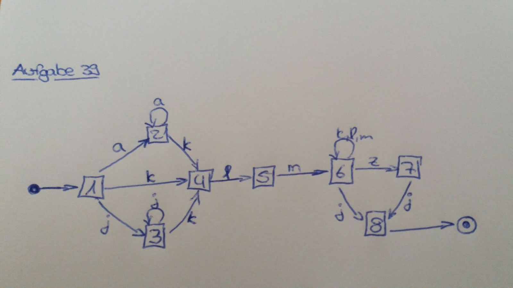
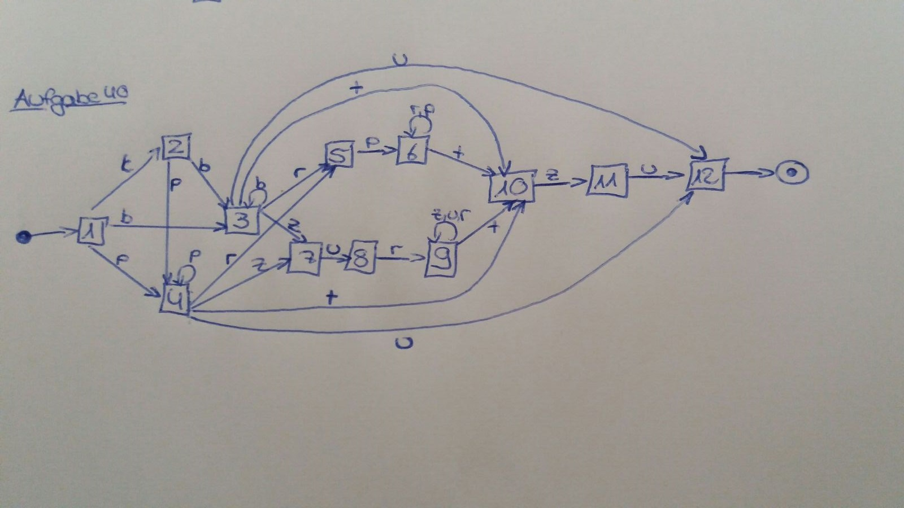
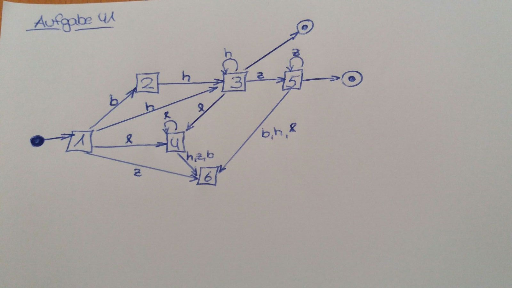

TREFFpunkt Formale Methoden und Datenstrukturen
immer mittwochs, von 17:30 Uhr bis 19:00 Uhr
in FU C0.08
Beginn ab 06.04.2016
Tutoren TREFFpunkt Formale Methoden und Datenstrukturen
Senior Tutor: Tobias Straub, t.straub@hs-furtwangen.de
Junior Tutorin: Nadine Jakob, nadine.jakob@hs-furtwangen.de
TREFFpunkt Übersicht
1. TREFFpunkt vom 06.04.
Skript: Ansehen
Musterlösung zu Aufgabe 1:
Musterlösung zu Aufgabe 2:
Musterlösung zu Aufgabe 3:
Musterlösung zu Aufgabe 4:
Musterlösung zu Aufgabe 5:
2. TREFFpunkt vom 13.04.
Skript: Ansehen
Musterlösung zu Aufgabe 6:
Musterlösung zu Aufgabe 7:
Musterlösung zu Aufgabe 8:
3. TREFFpunkt vom 20.04.
Skript: Ansehen
Musterlösung zu Aufgabe 9:
Musterlösung zu Aufgabe 10:
Musterlösung zu Aufgabe 11:
Musterlösung zu Aufgabe 12:
Musterlösung zu Aufgabe 13:
4. TREFFpunkt vom 27.04.
Skript: Ansehen
Musterlösung zu Aufgabe 14:
Musterlösung zu Aufgabe 15:
Musterlösung zu Aufgabe 16:
5. TREFFpunkt vom 04.05.
Skript: Ansehen
Bubblesort Schritt für Schritt (2013):
Musterlösung zu Aufgabe 17:
Musterlösung zu Aufgabe 18:
Musterlösung zu Aufgabe 19:
6. TREFFpunkt vom 11.05.
Skript: Ansehen
Musterlösung zu Aufgabe 20:
Musterlösung zu Aufgabe 21:
Musterlösung zu Aufgabe 22:
Musterlösung zu Aufgabe 23:
Musterlösung zu Aufgabe 24:
Musterlösung zu Aufgabe 25:
Musterlösung zu Aufgabe 26:
Musterlösung zu Aufgabe 27:
7. TREFFpunkt vom 25.05.
Skript: Ansehen
Musterlösung zu Aufgabe 28:
Musterlösung zu Aufgabe 29:
Musterlösung zu Aufgabe 30:
8. TREFFpunkt vom 01.06.
Skript: Ansehen
Musterlösung zu Aufgabe 31:
Musterlösung zu Aufgabe 32:
9. TREFFpunkt vom 08.06.
Skript: Ansehen
Musterlösung zu Aufgabe 33:
Musterlösung zu Aufgabe 34:
Musterlösung zu Aufgabe 35:
Musterlösung zu Aufgabe 36:
Musterlösung zu Aufgabe 37:
Musterlösung zu Aufgabe 38:
10. TREFFpunkt vom 15.06.
Skript: Ansehen
Musterlösung zu Aufgabe 39:

Musterlösung zu Aufgabe 40:

Musterlösung zu Aufgabe 41:

11. TREFFpunkt vom 22.06.
➰ Wiederholung von regulären Ausdrücken
12. TREFFpunkt vom 29.06.
KFuD14-01-30: Ansehen